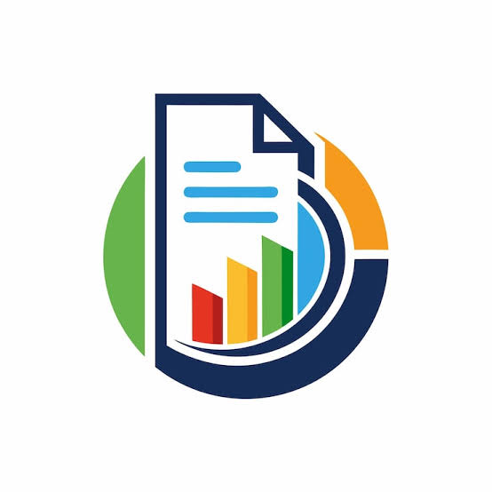

About Me
I design and ship production-grade AI systems and developer tools. My focus is on building robust ML pipelines, integrating LLMs into enterprise workflows, and automating operational tasks. I enjoy turning research ideas into reliable products and helping teams adopt best practices for deployment and observability.
Summary
Hands-on experience across the ML lifecycle: data ingestion and feature engineering, model training and evaluation, model optimization and deployment, and monitoring in production. I combine backend engineering (APIs, microservices, CI/CD) with ML expertise to deliver end-to-end solutions.
Technical Highlights
- Production ML: SageMaker, model serving, A/B testing, drift detection
- LLMs & RAG: Retrieval pipelines, vector stores, prompt engineering
- Backend & APIs: Django, FastAPI, REST, serverless functions
- DevOps: CI/CD, Docker, Kubernetes, Jenkins
- Monitoring: Prometheus, Grafana, logging, observability
Tools & Frameworks
Skills
Practical, production-focused skills across ML, backend engineering, and cloud infrastructure.
Scripting, libraries, packaging, async patterns, testing.
Modeling, feature engineering, evaluation, hyperparameter tuning.
CNNs, RNNs, Transformers, fine-tuning LLMs.
Retrieval, vector stores, prompt design, chain-of-thought flows.
AWS services, CI/CD, containerization, monitoring.
Designing robust REST/GraphQL endpoints and integrations.
Selected Projects
Representative work showing end-to-end delivery, production readiness, and measurable impact.
Built a full pipeline to detect and classify bird species from audio recordings. Preprocessing used noise reduction and MFCC features; model was an LSTM ensemble with confidence calibration. Deployed as a serverless inference endpoint with batch processing and a lightweight dashboard for conservation teams.

Designed a RAG pipeline using vector search and chunked documents to provide accurate answers from internal knowledge bases. Implemented prompt templates, safety filters, and a feedback loop to improve retrieval quality. Integrated with Slack and internal ticketing systems for automated triage.

Converted manual runbook tasks into Python APIs and automation scripts. Integrated with ServiceNow, Jenkins, and Splunk to automatically link related incidents, reducing manual effort and mean time to resolution. Added observability and retry logic for reliability.
Contributed to UI/UX and API integration for a mobile portfolio app supporting real-time portfolio monitoring, transaction history, and secure authentication. Implemented offline caching and optimized network usage for mobile performance.

Experience
Detailed roles and accomplishments showing progression, impact, and technical ownership.
- Designing and developing production-grade chatbot applications using Python and large language models; responsible for architecture, prompt design, and safety controls.
- Implemented RAG pipelines with vector stores, chunking strategies, and relevance tuning to improve retrieval accuracy by 28% in pilot deployments.
- Built agentic frameworks that orchestrate multi-step tasks across systems (ticket creation, data lookup, automated remediation).
- Integrated conversational AI into enterprise workflows, enabling automated triage and reducing manual handling for common requests.
- Led model evaluation and monitoring efforts: latency budgets, throughput testing, and drift detection alerts.
- Automated incident linking by converting manual runbook tasks into Python APIs and scheduled jobs, reducing repetitive effort across teams.
- Streamlined cross-platform workflows, integrating ServiceNow, Jenkins, and internal tools for end-to-end automation.
- Developed robust retry and error-handling strategies to ensure reliable automation under transient failures.
- Authored documentation and runbooks for maintainability and handover to operations teams.
- Built backend automation scripts and APIs (Django/REST) to streamline enterprise operations and reduce manual steps.
- Integrated systems across ServiceNow, Jenkins, and Splunk for improved observability and faster incident resolution.
- Implemented CI/CD pipelines and unit/integration tests to ensure reliable deployments and faster iteration cycles.
Certifications
Cloud and AI badges (images only).

AWS Certified Machine Learning — Specialty

AWS Certified Machine Learning — Associate

Microsoft Certified: Azure AI Engineer Associate

Google Cloud Professional Cloud Developer
Contact
I'm open to full-time roles and collaborations. Available for daytime, full-time positions — share a brief about your project or role and I'll respond promptly.
Email
dloorthukanishta@gmail.com
Location
Tamil Nadu, India